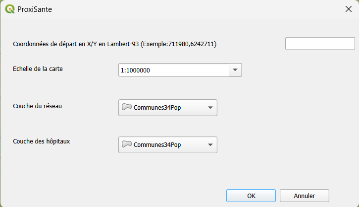
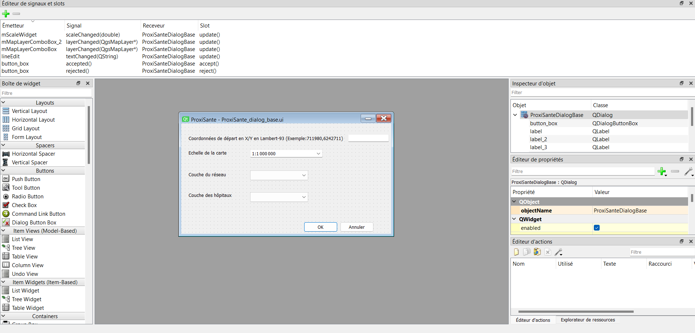
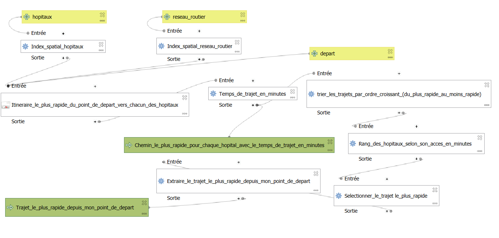
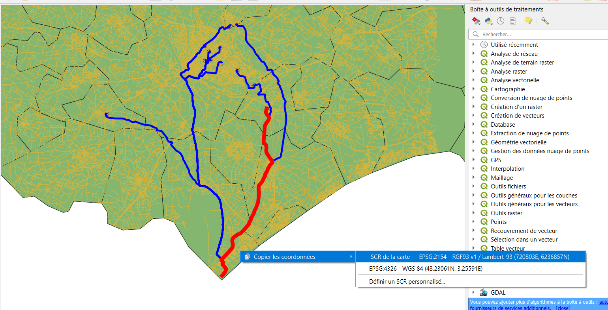
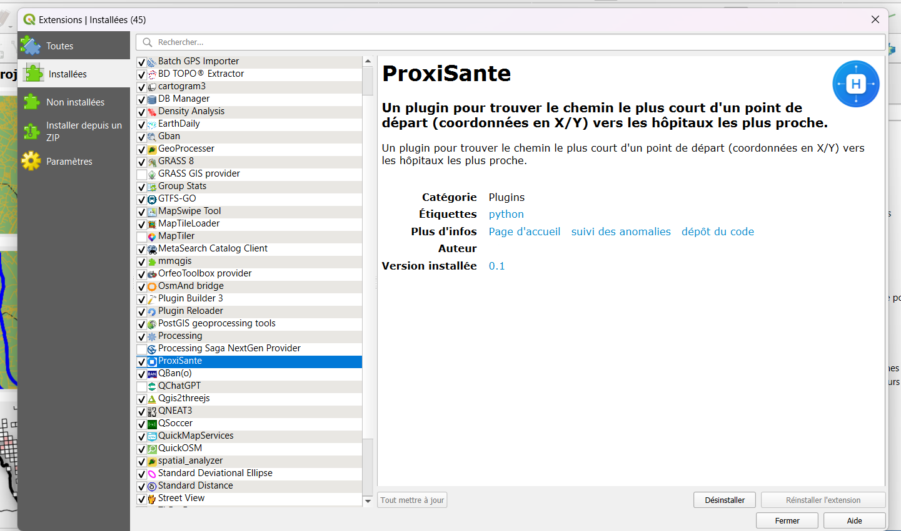

Plugin QGIS • Python • PyQGIS • Qt Designer • Modeleur graphique
Plugin QGIS développé en Python permettant de trouver automatiquement le chemin le plus rapide depuis un point de départ (coordonnées Lambert-93) vers les hôpitaux les plus proches. Développé en binôme dans le cadre d'un projet universitaire à l'Université de Montpellier.
Le plugin automatise l'analyse de réseau routier pour calculer les itinéraires optimaux vers les structures hospitalières à partir de n'importe quel point du territoire.
Entrée des coordonnées de départ en Lambert-93 (X,Y). Validation automatique du format et gestion des erreurs de saisie.
Calcul des itinéraires les plus rapides vers tous les hôpitaux via le réseau routier, avec temps de trajet en minutes.
Tri des hôpitaux du plus rapide au moins rapide. Extraction et mise en évidence du trajet optimal en rouge.
Chargement automatique des résultats dans QGIS avec styles différenciés : bleu pour tous les chemins, rouge pour le plus rapide.
L'interface a été conçue avec Qt Designer et intégrée à QGIS via PyQGIS. Les signaux et slots permettent la communication entre les widgets et la logique métier.

Interface finale — saisie coordonnées, échelle et sélection des couches

Qt Designer — éditeur de signaux et slots (mScaleWidget, mMapLayerComboBox, lineEdit)
Extrait — récupération des paramètres saisis dans l'interface et validation des coordonnées :
# Récupération des couches sélectionnées dans les ComboBox textMapLayer1 = self.dlg.mMapLayerComboBox.currentText() textMapLayer2 = self.dlg.mMapLayerComboBox_2.currentText() # Récupération et validation des coordonnées de départ Coordonnees_depart_texte = self.dlg.lineEdit.displayText().strip() point_depart = self.Obtenir_Coordonnees_depart(Coordonnees_depart_texte) def Obtenir_Coordonnees_depart(self, Coordonnees_depart_texte): try: Coordonnees = Coordonnees_depart_texte.strip().split(',') if len(Coordonnees) != 2: raise ValueError("Format de coordonnées invalide") lat, lon = map(float, Coordonnees) return QgsPointXY(lat, lon) # Crée un point géographique QGIS except (ValueError, IndexError) as e: QMessageBox.warning(None, "Erreur", f"Format invalide. Utilisez: X,Y (ex: 711980,6242711). Erreur: {str(e)}") return None
Le traitement algorithmique est encapsulé dans un modèle graphique QGIS qui orchestre les différentes étapes : indexation spatiale, calcul des itinéraires, calcul des temps en minutes, tri et extraction du trajet optimal.

Fig. 1 — Modèle graphique QGIS : pipeline complet de traitement depuis les entrées (hôpitaux, réseau routier, départ) jusqu'aux sorties (chemins classés et trajet optimal)
Index spatial sur les hôpitaux et le réseau routier pour optimiser les requêtes géographiques.
Itinéraire le plus rapide depuis le point de départ vers chacun des hôpitaux du réseau.
Conversion et calcul du temps de trajet en minutes pour chaque itinéraire calculé.
Tri par ordre croissant, sélection et extraction du trajet le plus rapide vers l'hôpital optimal.
Le modèle graphique a été exporté en Python sous forme de classe QgsProcessingAlgorithm. Ce script est ensuite importé et exécuté directement depuis le fichier principal du plugin, ce qui permet d'encapsuler tout le pipeline de traitement dans un algorithme QGIS réutilisable.
Architecture — appel du modèle depuis le plugin principal :
# Import du modèle exporté depuis le modeleur graphique from .Temps_de_trajet_vers_hopitaux import Temps_de_trajet_vers_hopitaux # Initialisation et exécution du modèle avec les paramètres de l'interface self.modele = Temps_de_trajet_vers_hopitaux() self.modele.initAlgorithm() results = self.modele.processAlgorithm(parameters, context, feedback)
Extrait clé — calcul du temps de trajet en minutes et classement des hôpitaux :
# Calcul du temps en minutes depuis la longueur du trajet (vitesse 80 km/h) 'FORMULA': 'round($length / (80 * 1000), 4) * 60' # Tri par ordre croissant pour trouver l'hôpital le plus rapide 'EXPRESSION': 'to_real("temps_minutes")' 'ASCENDING': True # Extraction du trajet classé n°1 (le plus rapide) 'FIELD': 'Classement', 'VALUE': 1
Le code complet est disponible sur le dépôt Codeberg.
Les résultats sont chargés automatiquement dans QGIS avec une symbologie différenciée. Les chemins vers tous les hôpitaux apparaissent en bleu, le trajet optimal vers l'hôpital le plus proche est mis en évidence en rouge.

Fig. 2 — Résultat dans QGIS : chemins vers tous les hôpitaux (bleu) et trajet le plus rapide (rouge). Copie des coordonnées en Lambert-93 ou WGS84 via clic droit.
Extrait — chargement et stylisation automatique des résultats dans QGIS :
def charger_resultats(self, pathResult1, pathResult2): # Tous les chemins vers les hôpitaux — ligne bleue fine vlayer1 = QgsVectorLayer(pathResult1, "Chemins vers les hopitaux", "ogr") if vlayer1.isValid(): symbol1 = QgsLineSymbol.createSimple({ 'line_color': '0,0,255,255', # Bleu 'line_width': '1' }) vlayer1.renderer().setSymbol(symbol1) QgsProject.instance().addMapLayer(vlayer1) # Trajet optimal — ligne rouge épaisse vlayer2 = QgsVectorLayer(pathResult2, "Hopital le plus proche", "ogr") if vlayer2.isValid(): symbol2 = QgsLineSymbol.createSimple({ 'line_color': '255,0,0,255', # Rouge 'line_width': '2' }) vlayer2.renderer().setSymbol(symbol2) QgsProject.instance().addMapLayer(vlayer2)
Le plugin est installable directement depuis le gestionnaire d'extensions de QGIS et apparaît dans le menu Extensions et la barre d'outils.

Fig. 3 — Plugin ProxiSanté installé dans QGIS — gestionnaire d'extensions avec description, catégorie et liens
Hébergé sur Codeberg • 100% Open Source
← Retour au portfolio